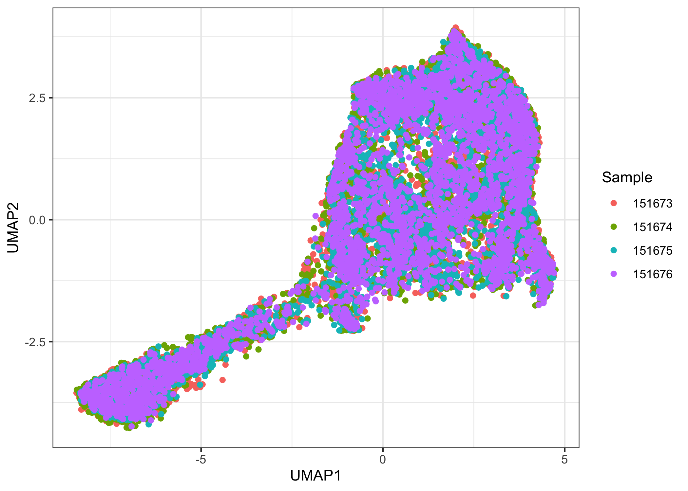
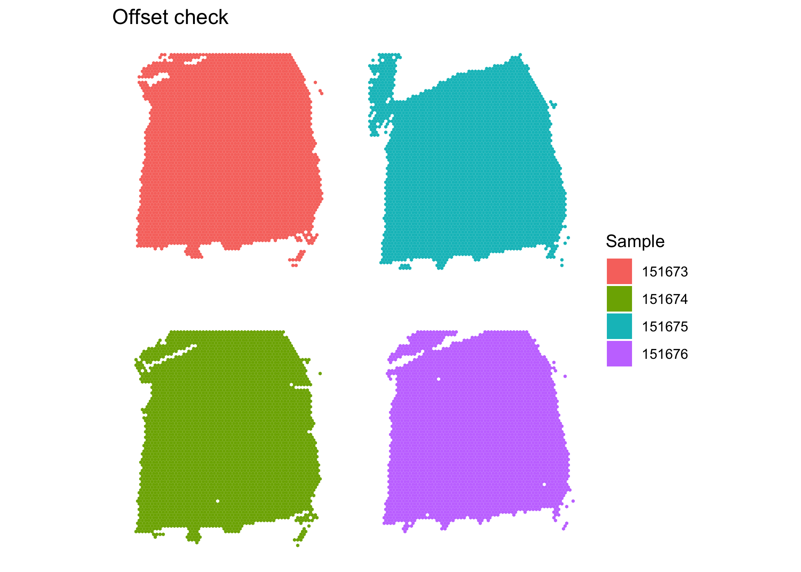
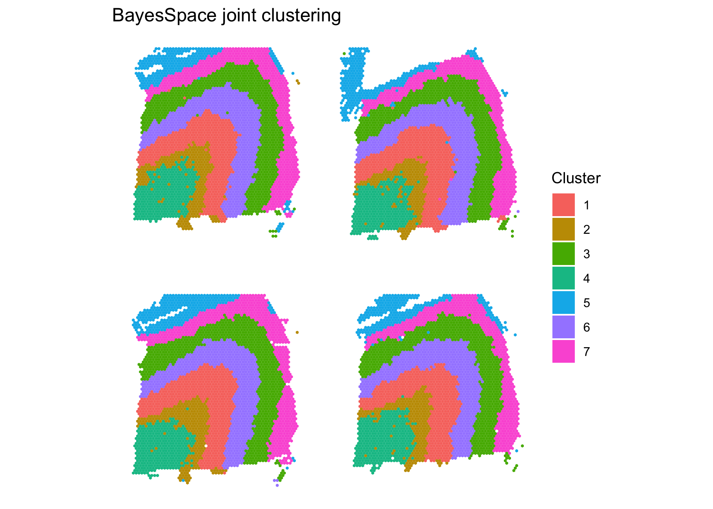

Joint Clustering Analysis
Edward Zhao, Matt Stone, and Raphael Gottardo
2021-08-03
Source:vignettes/joint_clustering.Rmd
joint_clustering.Rmd
suppressPackageStartupMessages({
library(ggplot2)
library(patchwork)
library(scater)
library(harmony)
library(BayesSpace)
})
set.seed(100)In this vignette, we describe how to perform a joint clustering analysis of 4 serial sections of the dorsolateral prefrontal cortex. The samples are 151673-151676, first described by Maynard et al. (2021).
Loading and preprocessing data
The samples are available in the BayesSpace package via the getRDS() function. The plots of the ground truth clusters (which were obtained through manual expert annotation) suggest that jointly modeling the samples may be beneficial.
sce1 = getRDS("2020_maynard_prefrontal-cortex", "151673")
sce2 = getRDS("2020_maynard_prefrontal-cortex", "151674")
sce3 = getRDS("2020_maynard_prefrontal-cortex", "151675")
sce4 = getRDS("2020_maynard_prefrontal-cortex", "151676")
((clusterPlot(sce1, "layer_guess_reordered", color = NA) |
clusterPlot(sce2, "layer_guess_reordered", color = NA)) /
(clusterPlot(sce3, "layer_guess_reordered", color = NA) |
clusterPlot(sce4, "layer_guess_reordered", color = NA))) +
plot_layout(guides = "collect") +
plot_annotation(title = "Ground truth")
The rowData for each sample contains previously calculated highly variable genes (HVGs), which are not consistent across samples. These need to be removed and recalculated after combining into one SingleCellExperiment object.
rowData(sce1)$is.HVG = NULL
rowData(sce2)$is.HVG = NULL
rowData(sce3)$is.HVG = NULL
rowData(sce4)$is.HVG = NULL
#Combine into 1 SCE and preprocess
sce.combined = cbind(sce1, sce2, sce3, sce4, deparse.level = 1)
sce.combined = spatialPreprocess(sce.combined, n.PCs = 50) #lognormalize, PCABatch correction
We aim for our clustering analysis to capture biological patterns across the four samples rather than technical differences between each sample. It is a good idea to check for batch effects first by plotting a low-dimensional representation of the data. Note here the sample name is stored in colData(sce.combined) in the column sample_name.
sce.combined = runUMAP(sce.combined, dimred = "PCA")
colnames(reducedDim(sce.combined, "UMAP")) = c("UMAP1", "UMAP2")
ggplot(data.frame(reducedDim(sce.combined, "UMAP")),
aes(x = UMAP1, y = UMAP2, color = factor(sce.combined$sample_name))) +
geom_point() +
labs(color = "Sample") +
theme_bw()
There is a noticeable batch effect. We use Harmony to integrate the four samples.
# install.packages("devtools")
# devtools::install_github("immunogenomics/harmony")
sce.combined = RunHarmony(sce.combined, "sample_name", verbose = F)
sce.combined = runUMAP(sce.combined, dimred = "HARMONY", name = "UMAP.HARMONY")
colnames(reducedDim(sce.combined, "UMAP.HARMONY")) = c("UMAP1", "UMAP2")
ggplot(data.frame(reducedDim(sce.combined, "UMAP.HARMONY")),
aes(x = UMAP1, y = UMAP2, color = factor(sce.combined$sample_name))) +
geom_point() +
labs(color = "Sample") +
theme_bw()
Clustering
After integration, there appears to be no obvious batch effect. We now prepare the samples for joint clustering. The spatial locations for each sample need to be offset so that spots of different samples are not neighbors. Here, we add 100 to row and/or 150 to col to achieve this effect. In this dataset, row ranges from 0 to 77 while col ranges from 0 to 127. Here, row and col are also columns of colData(sce.combined).
sce.combined$row[sce.combined$sample_name == "151674"] =
100 + sce.combined$row[sce.combined$sample_name == "151674"]
sce.combined$col[sce.combined$sample_name == "151675"] =
150 + sce.combined$col[sce.combined$sample_name == "151675"]
sce.combined$row[sce.combined$sample_name == "151676"] =
100 + sce.combined$row[sce.combined$sample_name == "151676"]
sce.combined$col[sce.combined$sample_name == "151676"] =
150 + sce.combined$col[sce.combined$sample_name == "151676"]
clusterPlot(sce.combined, "sample_name", color = NA) + #make sure no overlap between samples
labs(fill = "Sample", title = "Offset check")
The plot shows the samples are not overlapping, so the neighborhood network will be detected correctly. We proceed to use BayesSpace for clustering.
sce.combined = spatialCluster(sce.combined, use.dimred = "HARMONY", q = 7, nrep = 10000) #use HARMONY
clusterPlot(sce.combined, color = NA) + #plot clusters
labs(title = "BayesSpace joint clustering")
#calculate ARIs
aris = rep(NA, 4)
names(aris) = 151673:151676
for (sample.id in 151673:151676){
aris[as.character(sample.id)] =
mclust::adjustedRandIndex(sce.combined$spatial.cluster[sce.combined$sample_name == sample.id],
sce.combined$layer_guess[sce.combined$sample_name == sample.id])
}The results of the joint clustering show consistent structure across samples. Comparing to the ground truth, we obtain ARIs of 0.56, 0.59, 0.6, and 0.57 for the four samples. This represents a substantial improvement over the single sample clustering analyses, where we obtained values of 0.55, 0.44, 0.55, and 0.37 respectively for the four samples.